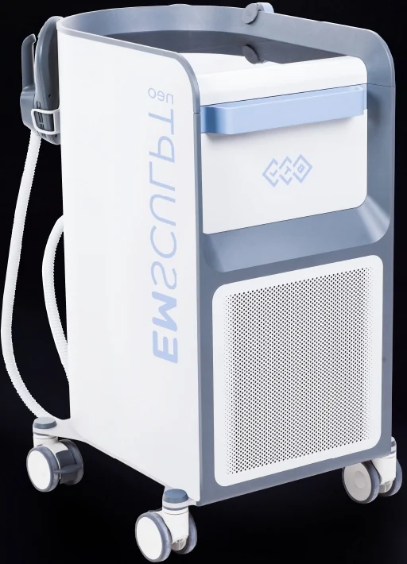

How it works
Radiofrequency (RF) heats the fat layer until the fat cells are damaged, and your body clears them over the next few weeks. The magnetic pulses, called HIFEM, act directly on the nerve that controls the muscle. Apex says a 30-minute session makes the muscle contract about 20,000 times.
The muscle responds the same way it does to heavy training and gets thicker and stronger. The researchers think the RF heat adds to the muscle growth since heat on its own helps muscle grow.
Results from studies
In the MRI study, waists were 5.87 cm smaller on average at 3 months.
A second trial, published in Plastic and Reconstructive Surgery in 2022, gave 48 people the real treatment and 24 people a fake one set to 5 percent power. After 3 sessions the treated group had 20.5 percent less belly fat and 21.5 percent more muscle at 1 month, going up to 28.3 percent and 24.2 percent at 3 months. The fake treatment group had no change, and the treated group still had their results at 6 months.
What a session feels like
You lie on a bed and the nurse straps the applicator over the area. Your skin warms up over the first few minutes, then the muscle starts to tighten and relax in strong pulses. The nurse turns the power up as you get used to it and down whenever you ask.
You can go straight back to work. Your muscles may feel tired or sore like after a hard workout.
After pregnancy
During pregnancy the two sides of the main belly muscle stretch apart. In many women the gap stays wider after giving birth, which is called diastasis recti, and the belly still sticks out after the weight is gone. In the MRI study the gap was 18.8 percent narrower 3 months after treatment.
Wait until your own doctor says you can exercise again after giving birth. A wide gap may still need physiotherapy or surgery, and our doctor will check it at your consult.
When you'll see a change
Apex says results start to show after 2 to 4 sessions and are clearest after 4 to 6. In the studies, the results for both fat and muscle were biggest at 3 months.
Who it's for
Emsculpt Neo is for people who want more muscle but don't see it from exercise, mothers who want their belly muscle back after giving birth, people with no time for the gym, and anyone after a six-pack, lines down the belly or firmer buttocks. An applicator called Edge treats the sides of the waist, where fat is hard to shift.
It works best if you're close to a healthy weight. It only takes fat out of the area being treated, so it won't replace weight loss if you have a lot to lose.
It can't be used if you're pregnant, have a pacemaker or another electronic implant, or have metal implants in or near the area.
Questions
Does it hurt?
The contractions are strong and the area gets warm. The nurse can turn it down any time you ask.
Will I get a six-pack?
It makes the muscle thicker and the fat over it thinner. How much of the muscle shows depends on how much fat you had to begin with.
How long do the results last?
In the trial they were still there at 6 months. Muscle you don't use gets smaller over time, so keep exercising to hold on to the result.
Can I combine it with CoolSculpting?
Yes. CoolSculpting removes more fat from thicker areas and Emsculpt Neo builds the muscle underneath.
Sources
- Apex Hospital & Clinics. Emsculpt Neo leaflets, sent by the Apex Slim team in November 2026 (shown on this page under Apex leaflets).
- Jacob C, Kent D, Ibrahim O. Efficacy and safety of simultaneous application of HIFEM and synchronized radiofrequency for abdominal fat reduction and muscle toning: a multicenter magnetic resonance imaging evaluation study. Dermatol Surg. 2021;47(7):969-973. doi:10.1097/DSS.0000000000003086
- Samuels JB, Katz B, Weiss RA. Radiofrequency heating and high-intensity focused electromagnetic treatment delivered simultaneously: the first sham-controlled randomized trial. Plast Reconstr Surg. 2022;149(5):893e-900e. doi:10.1097/PRS.0000000000009030
- Apex Medical Center. Emsculpt service page. apexmedicalcenter.co.th
Results vary from person to person. The doctor checks whether a treatment suits you at your consult.